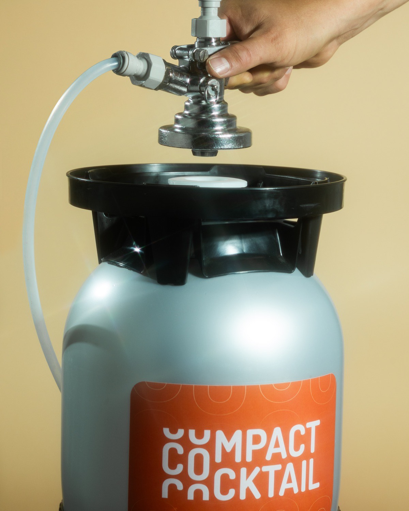

Bars
6× fasterthan a manual pour
- Same pour every shift
- Anyone can pour — no skilled hire
- No over-pour = more margin
Compact Cocktail on tap
Real cocktails on tap. Plug the keg, pull the tap, serve.

Trusted across Hungary
Sirály Bár ● Kempinski ● Voilá ● Fehér Nyúl ● Whisky Show ● Time Out Market
How it works
A ready-to-serve cocktail system on a standard draft line.
Keg onto your CO₂ line.
A cocktail in 10 seconds.
72–180 drinks per keg.
Who it’s for
6× fasterthan a manual pour

1 drinkidentical at every outlet

180 / hra manual bar can’t clear
Get in touch — we’ll set up a free tasting and walk you through the numbers.
What you’d pour

Aperol, sparkling wine, soda · 8%

Vodka, passion fruit, vanilla, lime · 9.5%

Planteray rum, lime, fresh mint, soda · 9.5%
Tequila, lime, grapefruit, soda · 9.5%
Vodka, mango purée, lime, ginger beer · 9.5%

Your recipe, your keg, your label · from 500 L
Out in the wild


Quick check
Find out in a few clicks.

Who’s behind it
The dream team behind the perfect pour.
Everything’s handled

Take it to the team
No commitment
Book a tasting — see how it cuts waste, saves time, and lifts your margins.
For home
The same cocktails in 5 L party kegs — about 30 drinks each, straight from the shop.
Shop party kegs →